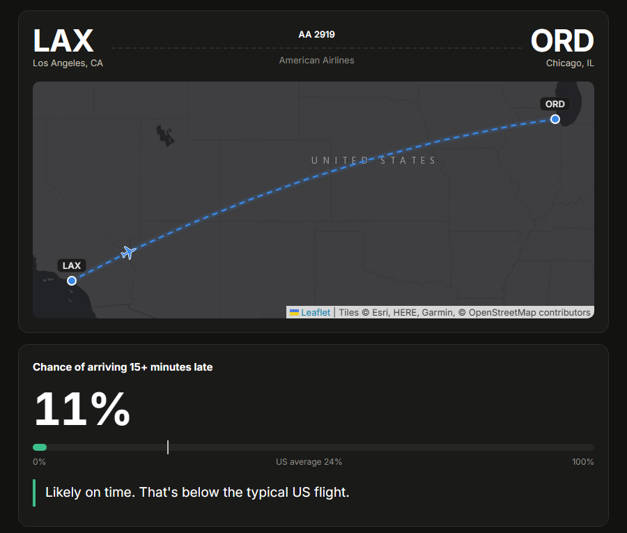

Twin Cities Living Quality Map 2026
An interactive map that scores every St. Paul and Minneapolis district from 0–100 on safety, opportunity, amenities, transportation, and economic profile. A Python pipeline pulls public data from the two cities, OpenStreetMap, the Census, MnDOT, and CDC, and a Next.js map adds address search and multi-year trends. In Minneapolis it connects to the Home Assessment Check: each community shows how its property-tax values compare with sale prices, and any home you search links to its own assessment.
Next.js
Python
GitHub Actions
Vercel
Live Site
GitHub Repo
Gopher X Metro 2026
A live map of every University of Minnesota campus bus alongside Metro Transit buses and light rail, so students can use their transit pass without juggling apps. I built it in 2024 with a team of eight (Adam, Ken, Riley, Will, Babacar, Alex, Mike, and Andy), and in 2026 I revived it after the original hosting lapsed. I ported the map from Google Maps to Leaflet and OpenStreetMap, replaced the Supabase backend with static JSON built from Metro Transit's GTFS feed, and set up a GitHub Action that refreshes schedules weekly. It now runs free with no API keys, and tapping any stop shows its next departures.
React
TypeScript
Leaflet
GTFS / GTFS-Realtime
GitHub Actions
Live Site
GitHub Repo
Will My Flight Be Delayed? 2026
Enter a US flight number and date to get the chance it arrives 15+ minutes late, with an animated route map, flight details and live weather. A LightGBM model trained on 7M flights uses airline, airport, route and flight-number history, aircraft type and age from the FAA registry, the plane's turnaround and inbound flight, holidays, and hourly weather at both ends. Features were chosen with SHAP. On two held-out months it reached an AUC of 0.73, compared with 0.62 for the flight's own track record. It runs entirely in the browser.

Python
LightGBM
SHAP
Leaflet
JavaScript
Live Site
GitHub Repo
Minneapolis Home Assessment Check 2026
A lookup tool that shows Minneapolis homeowners how their assessed value compares with time-adjusted prices of similar nearby sales, plus an independent gradient-boosted estimate of this month's sale price with calibrated ranges. The model never sees the city's values. In the 2026 backtest, its typical error (9.4%) beat the city's (12.0%). Each home links back to the Living Quality Map for its neighborhood.
Python
scikit-learn
Conformal prediction
GitHub Pages
Live Site
GitHub Repo
Movie Recommender 2026
A live web app: rate a few movies and get a ranked list of what to watch next. It extends my 2024 capstone's benchmark of eight recommenders on 33.8M fresh MovieLens ratings. EASE ranked best, at 7x SVDF's nDCG@10, so the app serves it through FastAPI, pruned from 576 MB to 19 MB to fit free hosting.
Python
NumPy / numba
EASE
FastAPI
JavaScript
Live Site
GitHub Repo
My Social Media, as Data 2026
One data story built from fourteen years of my Instagram, Reddit, YouTube and Snapchat exports plus an iPhone backup (iMessage and Apple Health), publishing only aggregates. It tracks how recommendation algorithms took over every feed (my top 10 accounts went from most of my likes to under 10%), how short video ate my feeds, why doomscrolling pays off for the companies, and where AI fits in, then contrasts it with texting, where my top 10 conversations get 89% of my messages, and with the steps my phone counts when I'm not on it.

Python
pandas
Transformers
JavaScript
Live Site
Repo
Creekside 2026
A couch co-op pixel puzzle-platformer for two players on PS5 controllers, inspired by It Takes Two and Pico Park. An otter and a red panda, with Bear the dog, work through ten chapters of puzzles built around teamwork: stacking, pushing together, synced buttons, pulleys, and walls only one of them can pass. Along the way they rescue lost animal friends. Built on the Emerald WebGL engine, with procedural pixel art, custom tile physics, and synthesized chiptune audio.
JavaScript
WebGL (Emerald)
Gamepad API
Vite
Play It
GitHub Repo